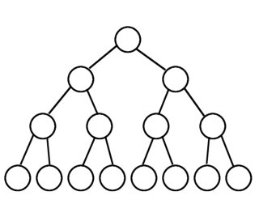

Basic terms used in trees
- Root:
- The root node is the topmost node in the tree hierarchy. In other words, the root node is the one that doesn't have any parent.
- Child node:
- If the node is a descendant of any node, then the node is known as a child node.
- Parent:
- If the node contains any sub-node, then that node is said to be the parent of that sub-node.
- Sibling:
- The nodes that have the same parent are known as siblings.
- Leaf Node:
- The node of the tree, which doesn't have any child node, is called a leaf node.
A leaf node is the bottom-most node of the tree. There can be any number of leaf nodes present in a general tree.
- Internal nodes:
- A node has atleast one child node known as an internal
- Ancestor node:
- An ancestor of a node is any predecessor node on a path from the root to that node. The root node doesn't have any ancestors.
- Descendant:
- The immediate successor of the given node is known as a descendant of a node.
TYPES OF TREES
Full Binary Trees

- A full binary tree is a tree in which every node has either 0 or 2 children.
- A full binary tree on the other hand does not have any nodes that have only one child node.
- If T be a nonempty full binary tree and has I internal nodes, the number of leaves is L = I + 1.
Complete Binary Trees

- Every level except possibly the lastis completely filled and all nodes in the last level are as far left as possible.
- It can have between 1 and 2h nodes at the last level h.
TYPES OF TREE TRAVERSAL
INORDER TRAVERSAL
PREORDER TRAVERSAL
POSTORDER TRAVERSAL
BINARY SEARCH TREE